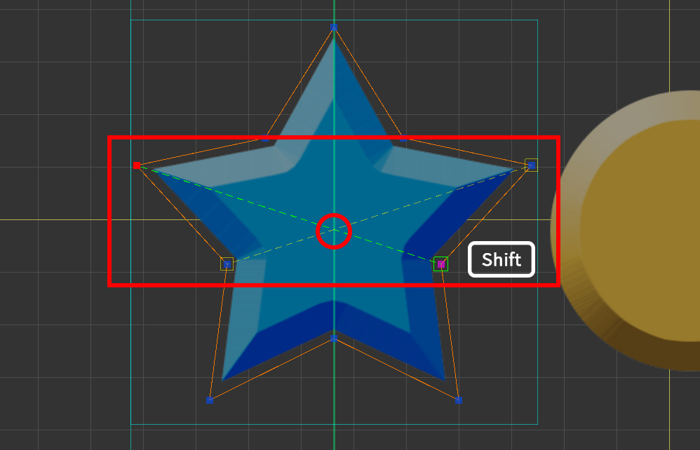
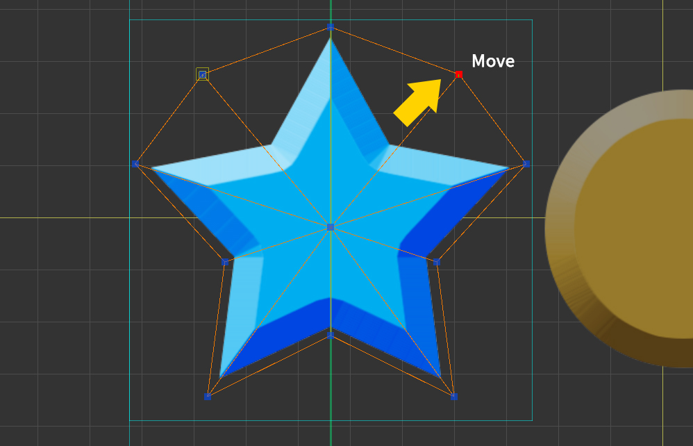
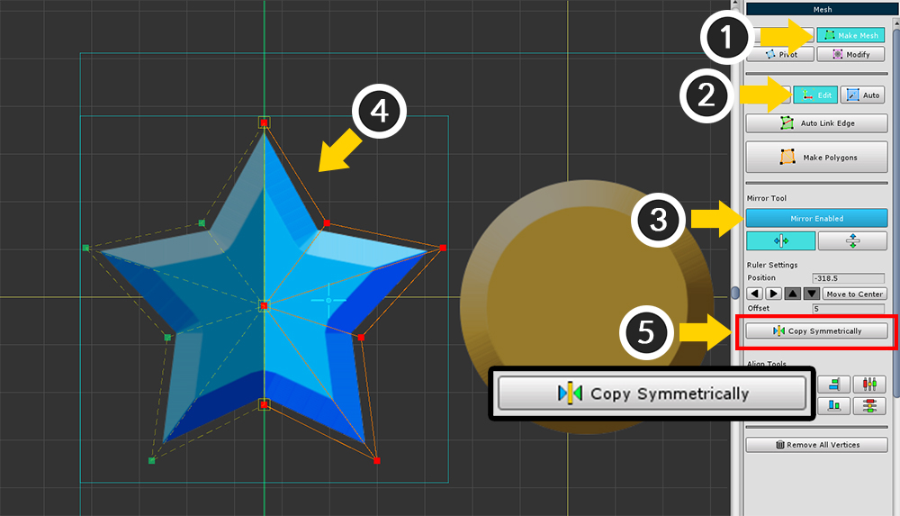

AnyPortrait > マニュアル > メッシュミラーツール
メッシュミラーツール
1.1.0
メッシュミラーツールは、メッシュを作成するときに対称なイメージをすばやく操作できる機能です。
この機能を使用すると、非対称の位置に頂点を作成したり、その位置を変更することができます。
画像領域を設定し、鏡軸を配置

(1) メッシュを選択します。
(2) 「Setting」タブを選択します。
(3) 「Area Disabled」ボタンを押すと、「Area Enabled」の状態になります。
(4) 領域の大きさを設定します。 「増加/減少」ボタンを押すか、値を直接入力して設定できます。
(5) ワークスペースに矩形の領域が表示されます。

(1) 「Make Mesh」タブを選択します。
(2) 「Add」タブを選択します。
(3) ミラー機能を有効にします。
(4) ミラー軸の位置を設定します。
増減ボタンを押して、位置の値を入力したり、位置を直接設定することができます。
前のステップで領域を作成した場合は、「Move to Center」ボタンを押して領域を中央に移動できます。
ミラーツールはタスクアシスタントであるため、メッシュ編集が完了するとミラーリングは無効になります。
ミラー軸の位置または設定値は保持されます。
ミラーツールのUI

1. ミラーツールをオンまたはオフにします。
2. ミラー軸を垂直または水平のどちらかに向けます。
3. ミラー軸の位置を設定します。
イメージエリアが設定されている場合は、「Move To Center」ボタンを押してイメージエリアを中央に移動できます。
4. 頂点をミラー軸上に配置するとき、オフセットの距離内の頂点は軸上にあるとみなされます。
5. 鏡軸上に頂点をスナップして配置します。
6. 頂点を削除するときは、反対側の頂点の頂点も削除します。
ミラーツールを使用してメッシュを作成

頂点を追加すると、対称位置に頂点が追加されます。

ミラー軸に頂点を追加すると、ミラー軸にマージされた1つの頂点として作成されます。

Shift を押しながら軸と交差するエッジを作成すると、交差点に頂点が作成されます。

頂点を移動すると、反対側の頂点の頂点も同様に移動します。

「Remove Symmetrically」オプションがオンの場合、頂点を削除するとその反対も削除されます。
一度に複数の頂点を対称的にコピー

(1) 「Make Mesh」タブを選択します。
(2) 「Edit」タブを選択します。
(3) ミラーツールをオンにします。
(4) コピーしたい頂点を選択します。 コピーする頂点をプレビューできます。 （緑の頂点と点線）
(5) 「Copy Symmetrically」ボタンを押してコピーします。